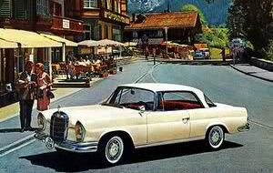
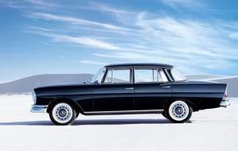
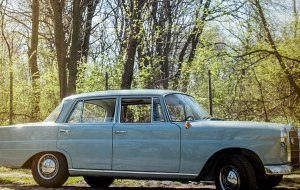

Mercedes "Reponja"
Mercedes "Reponja"
Jak uticaj američkih limuzina koje su se «kitile» perajima na zadnjim delovima nije se svideo nemačkoj publici koja je šetala izložbom u Frankfurtu 1959. godine. Ipak, bio je to tek mali početni šok jer kada je krenuo u prodaju, videlo se da će novi Mercedes napraviti dobar posao. Jasno, peraja tu nisu bile slučajno jer je ovaj lepi primerak uz matično, evropsko, na nišanu imao i bogato američko tržište.
Početni modeli, predstavljeni 1961. godine, bili su 4-cilindraši, jedan benzinac i jedan dizelaš (190, 190D) i ta serija je nosila oznaku W110.
Prostrana i luksuzna kabina mazila je svoje vlasnike i putnike koji su se mogli osećati sigurnije nego u ostalim automobilima. Naime, ova serija Mercedesa prva je prošla kroz znatno ozbiljnija crash-testiranja (prvi put konstruisana zona gužvanja), i u mnogim detaljima se moglo primetiti da su Mercedesovi inženjeri posvetili puno pažnje sigurnosti (kvake na vratima, prekidači na ploči...). Zanimljiv je bio i vertikalni brzinomer koji je na brzinama od 0-50 km/h bio žute boje, od 50-60 km/h žuti s crvenim crtama, a od 60 km/h na više crvene boje.